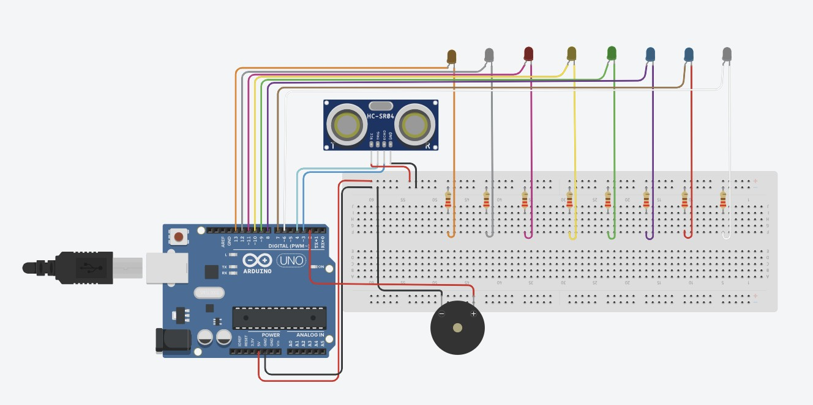
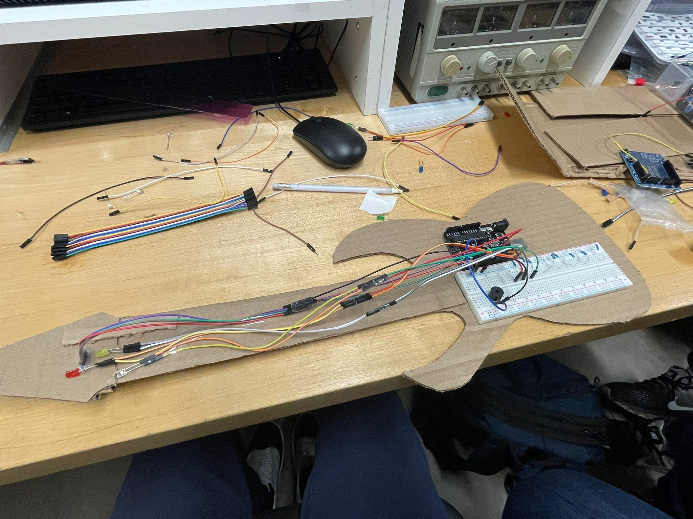
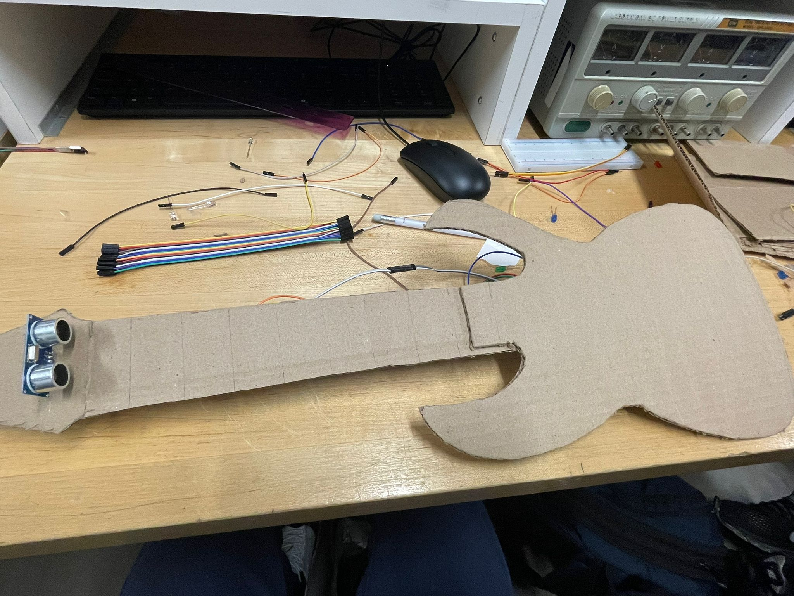

Course: TECH 117 (Computer Engineering Technology, Fall 2025)
Instructor: Ph.D. Ana Rodrigues
Team Members:
This project uses an Arduino Uno, an HC-SR04 ultrasonic sensor, a passive buzzer, and LEDs to calculate the distance between the user and the sensor to activate a song to display using its corresponding LED.
The ultrasonic sensor measures distance; the Arduino activates LEDs and the buzzer according to distance thresholds.
By using this sensor, we can create a responsive system that maps sound to the LED positions without draining power and even budget.
| Item | Description | Qty. | Specifications | Estimated Cost (CAD) | Supplier |
|---|---|---|---|---|---|
| 1 | Arduino Uno R3 | x1 | ATMega328P Microcontroller | $15.99 | Arduino Uno R3 |
| 2 | HC-SR04 | x1 | 5V (DC) | $4.95 | HC-SR04 |
| 3 | Breadboard 830 Contacts | x1 | 830 Tie Points | $7.95 | Breadboard 830 Contacts |
| 4 | Resistor 220 | x3 | 220 Ohm, 5% | $0.99 | Resistor 220 |
| 5 | Passive Buzzer | x1 | 12mm round buzzer | $1.99 | Passive Buzzer |
| 6 | LED Lights | x8 | 5mm LED Diode 10pcs | $1.64 | LED Lights |
| 7 | Jumper Wires (M/F) | x4 | Male to Female | $4.99 | Jumper Wires M/F |
| 8 | Jumper Wires (M/M) | x2 | Male to Male | $4.99 | Jumper Wires M/M |
| 9 | Computer | x1 | Arduino IDE | ---------- |
The following image resembles the prototype with the components connected to a breadboard and Arduino Uno on a cardboard structure.
 The following Arduino code controls the system, by giving options of which song to play using a HC-SR04 sensor to then display the song using its corresponding LED.
#include "arduino_secrets.h"
#define ECHO_PIN 3
#define TRIGGER_PIN 4
#define LED_Do 13
#define LED_Re 12
#define LED_Mi 11
#define LED_Fa 10
#define LED_Sol 9
#define LED_La 8
#define LED_Si 7
#define LED_Do_High 6
#define BUZZER_PIN 2
unsigned long last_time_ultrasonic_trigger = 0;
unsigned long ultrasonic_trigger_delay = 100;
volatile unsigned long pulse_start;
volatile unsigned long pulse_end;
volatile bool new_distance_available = false;
const int time_delay = 100;
// Notes (frequencies)
int notes[] = {
523, // Do
587, // Re
659, // Mi
698, // Fa
784, // Sol
880, // La
988, // Si
1046 // High Do
};
void trigger_ultrasonic_sensor() {
digitalWrite(TRIGGER_PIN, LOW);
delayMicroseconds(2);
digitalWrite(TRIGGER_PIN, HIGH);
delayMicroseconds(10);
digitalWrite(TRIGGER_PIN, LOW);
}
void echo_interrupt() {
if (digitalRead(ECHO_PIN) == HIGH) {
pulse_start = micros();
} else {
pulse_end = micros();
new_distance_available = true;
}
}
double get_distance() {
double duration = pulse_end - pulse_start;
return duration / 58.0; // convert to cm
}
void turn_off_all_leds() {
digitalWrite(LED_Do, LOW);
digitalWrite(LED_Re, LOW);
digitalWrite(LED_Mi, LOW);
digitalWrite(LED_Fa, LOW);
digitalWrite(LED_Sol, LOW);
digitalWrite(LED_La, LOW);
digitalWrite(LED_Si, LOW);
digitalWrite(LED_Do_High, LOW);
}
void setup() {
Serial.begin(9600);
pinMode(TRIGGER_PIN, OUTPUT);
pinMode(ECHO_PIN, INPUT);
pinMode(LED_Do, OUTPUT);
pinMode(LED_Re, OUTPUT);
pinMode(LED_Mi, OUTPUT);
pinMode(LED_Fa, OUTPUT);
pinMode(LED_Sol, OUTPUT);
pinMode(LED_La, OUTPUT);
pinMode(LED_Si, OUTPUT);
pinMode(LED_Do_High, OUTPUT);
pinMode(BUZZER_PIN, OUTPUT);
attachInterrupt(digitalPinToInterrupt(ECHO_PIN), echo_interrupt, CHANGE);
Serial.println("Air Piano Ready!");
}
void loop() {
unsigned long now = millis();
if (now - last_time_ultrasonic_trigger > ultrasonic_trigger_delay) {
last_time_ultrasonic_trigger = now;
trigger_ultrasonic_sensor();
}
if (new_distance_available) {
new_distance_available = false;
double distance = get_distance();
int note_index = -1;
if (distance > 3 && distance <= 6) note_index = 0;
else if (distance > 6 && distance <= 8.5) note_index = 1;
else if (distance > 8.5 && distance <= 12) note_index = 2;
else if (distance > 12 && distance <= 15) note_index = 3;
else if (distance > 15 && distance <= 18) note_index = 4;
else if (distance > 18 && distance <= 21) note_index = 5;
else if (distance > 21 && distance <= 24) note_index = 6;
else if (distance > 24 && distance <= 27) note_index = 7;
else{
noTone(BUZZER_PIN);
}
if (note_index != -1) {
turn_off_all_leds();
int led_pin;
if (note_index == 7)
led_pin = LED_Do_High;
else
led_pin = LED_Do - note_index;
digitalWrite(led_pin, HIGH);
tone(BUZZER_PIN, notes[note_index]);
//delay(time_delay);
//noTone(BUZZER_PIN);
}
}
delay(5);
}
This Project serves as a purpose for people to interact with a tool to encourage them to learn a new skill and making them productive to take their mind off of unproductive things whilst also having fun in the process.
The following external resources are the sources we used to research our project: